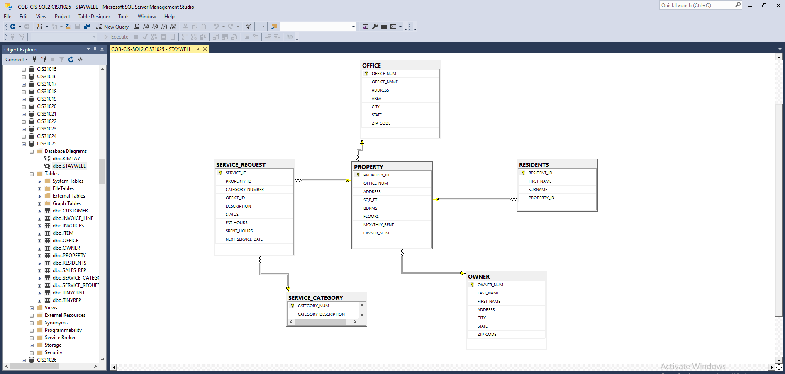
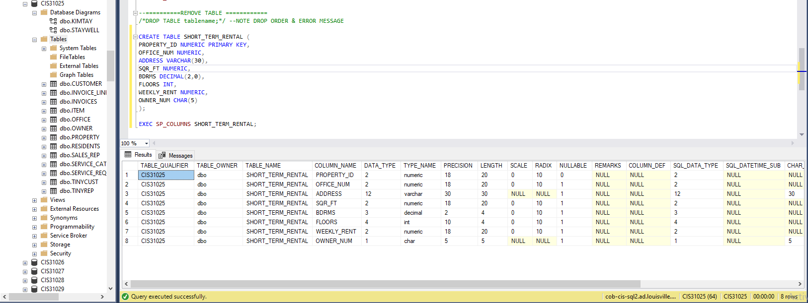
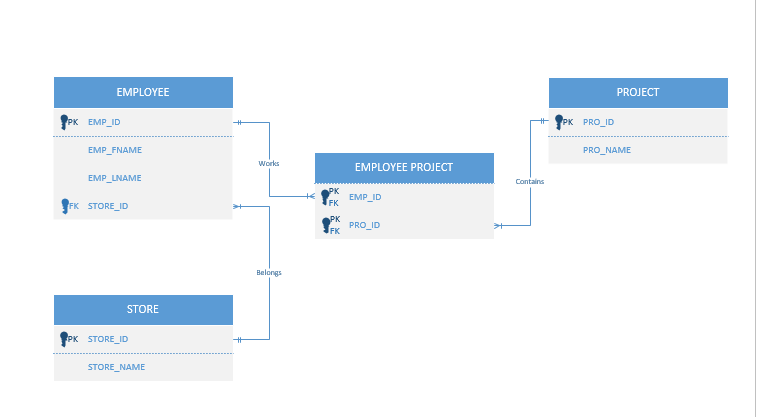
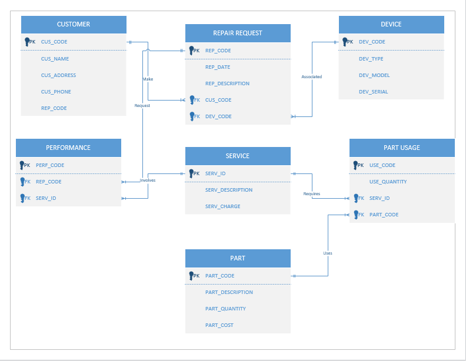
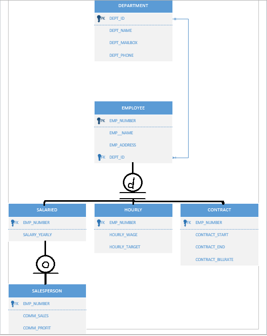
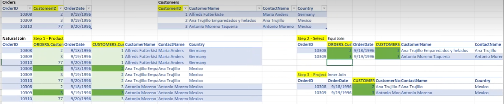
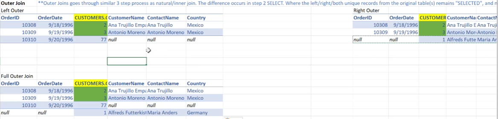
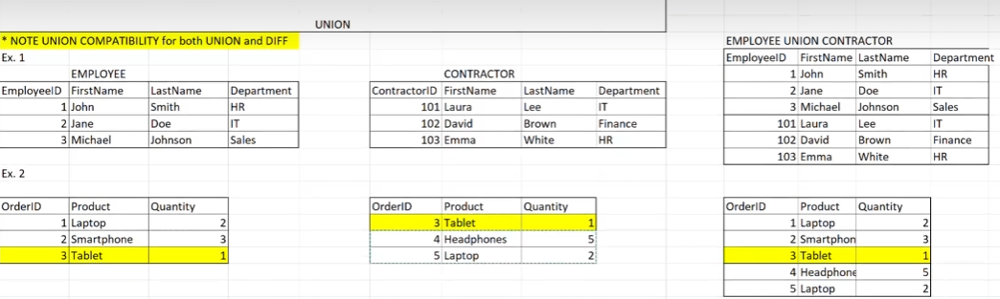
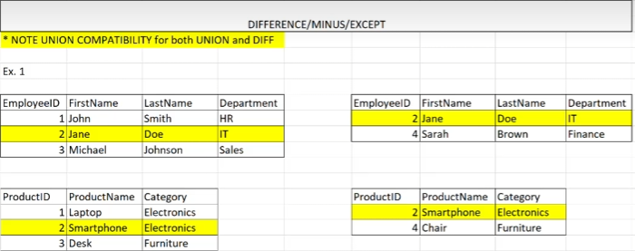
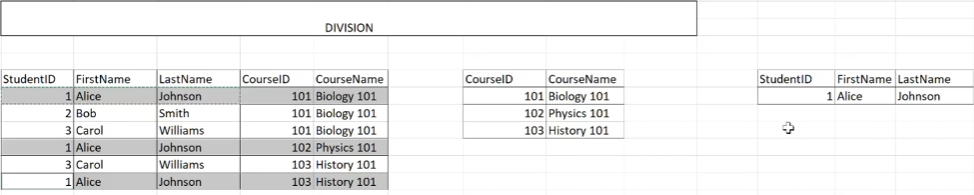

Database design is about translating how a business actually works into tables and relationships that keep data accurate. This section shows that full path from CIS 310: modeling business rules as ERDs, building tables in Microsoft SQL Server, and understanding exactly what each relational operation (joins, unions, and so on) returns. Every report, dashboard, and CRM I've worked with since sits on these fundamentals.
CIS 310 · Microsoft SQL Server Management Studio, Visio-style crow's-foot ERDs, Excel
A six-table relational database for a property management company, built and diagrammed in SQL Server Management Studio. Each property belongs to an office and an owner, has residents, and generates service requests that are each assigned a category.

I wrote the table definition by hand, choosing a data type for each column, then used the sp_columns system procedure to verify
what SQL Server actually created.
CREATE TABLE SHORT_TERM_RENTAL (
PROPERTY_ID NUMERIC PRIMARY KEY,
OFFICE_NUM NUMERIC,
ADDRESS VARCHAR(30),
SQR_FT NUMERIC,
BDRMS DECIMAL(2,0),
FLOORS INT,
WEEKLY_RENT NUMERIC,
OWNER_NUM CHAR(5)
);
EXEC SP_COLUMNS SHORT_TERM_RENTAL;
OWNER_NUM CHAR(5) REFERENCES OWNER(OWNER_NUM)) so the
database itself rejects a rental tied to an owner who doesn't exist, and give WEEKLY_RENT an explicit precision like DECIMAL(8,2).Three models that each solve a different design problem:



Before writing SQL joins, I worked through each relational operation by hand in Excel to see exactly which rows come back. This matters in practice: a lot of reporting errors come down to choosing the wrong join.




